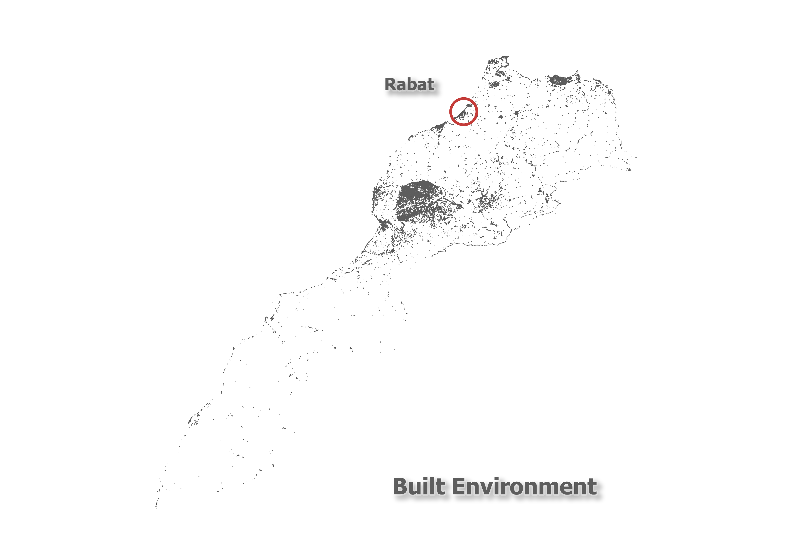

Our journey takes us to the enchanting city of Rabat, nestled at the geographical coordinates of 34 degrees north, where it proudly stands as the vibrant heart and soul of Morocco. Like any capital in the world, Rabat serves as a gateway to the essence of this diverse nation.
Rabat's uniqueness is woven from the myriad stories of its inhabitants, intertwined lives that thrive in this dynamic metropolis. Surprisingly, after the bustling Casablanca, Rabat claims the title of Morocco's fastest-growing city, a testament to its allure and magnetic pull.
While Rabat bears the distinguished honor of being one of Morocco's four imperial cities, it underwent significant transformations during the French colonial era. The French authorities undertook a meticulous overhaul of its historic core, endeavoring to imbue it with an authenticity designed to surpass even the genuine historical city itself. This intriguing paradox leaves us pondering: How can an artificially revitalized district possibly outshine the authentic historic urban core? A question deserving of its own dedicated exploration in a separate essay.
This pair of visual representations vividly illustrates the remarkable surge in the city's population over time. In our exploration, we'll dissect each graph to glean insights into this extraordinary demographic phenomenon.
The initial graph paints a chronological picture of population change spanning from 1950 to 2023. This graphical journey mirrors the city's evolution, providing a macroscopic view of its population trends. While the data fits seamlessly within the confines of this graph, grasping the concept that the population has surged by a staggering 1000% since 1950 proves to be a mental challenge. In comparison, the population of Paris has only increased %75 during that same time period.
The second graph, a rather distinctive and intriguing exploded pie chart, delves into finer granularity by dissecting the population change from 1950 to 2023. This detailed presentation invites us to explore the nuances of growth year by year.
What truly captivates our attention is the revelation that an astounding 50% of the overall population growth unfolded within the relatively compact timespan of two decades, spanning from 1960 to 1980. This condensed period accounts for half of the population increase witnessed over a span of three-quarters of a century. This fact alone prompts us to reflect on the rapid demographic shifts and socio-economic forces that shaped the city during those transformative two decades.
For nearly a century, Rabat, much like its counterpart Casablanca, has functioned as a sanctuary for Moroccans seeking new beginnings, primarily those hailing from the southern regions of the country. The allure of the northern territories has prompted a profound migration trend, leaving us to ponder the magnetic forces that draw people northward. Is it the promise of job opportunities or the prospects within the government apparatus, given Rabat's status as the nation's capital and the enduring influence of a bureaucratic culture left behind by the French colonial era?
Geographically, the proximity of Rabat and Casablanca to the northern latitudes plays a role in this population shift. Casablanca rests on the 33rd parallel, while Rabat stands just a degree north on the 34th parallel. These coordinates hold significance when we analyze the distribution of new constructions across the nation, as depicted in the graph below, relying on official government data.
Intriguingly, the graph vividly illustrates that in the year 2020, over three-quarters of new construction projects emerged above the 33rd parallel. This compelling statistic serves as a key piece of evidence in unraveling the narrative of the expanding northern regions that eagerly absorb populations migrating from the southern reaches of Morocco. Places like Beni Mellal where there is a lot of empty real estate for sale. The graph, in essence, becomes a visual storyteller, shedding light on the dynamic forces shaping the nation's demographic landscape.
Cities serve as both melting pots and, paradoxically, as platforms that can reinforce segregation along ethnic, tribal, or economic lines. These contrasting viewpoints have fervent advocates on either side of the argument, rendering the subject a fascinating area of study, especially when delving into the evolution of Casablanca's urban landscape.
However, the case of Rabat, while appearing more complex at first glance, or perhaps deceptively simpler depending on one's perspective, introduces unique factors into this discourse. Rabat holds a special place in the heart of the monarchy as the preferred city of residence for the king. Additionally, Prince Hassan, the future monarch, pursues his education at the University Mohammed VI Polytechnic University, emphasizing the city's prominence in academia.
Indeed, Rabat is renowned for its exceptional universities and abundant academic prospects, not to mention the promising employment opportunities awaiting graduates. Consequently, individuals from diverse backgrounds and communities have flocked to Rabat for educational purposes, often choosing to settle in the city permanently.
According to data compiled by the Institut National d'Aménagement et d'Urbanisme, it is noteworthy that less than 50% of Rabat's inhabitants can claim native status within the city. The subsequent chart provides a comprehensive breakdown of Rabat's residents, shedding light on both their origins and the how long they have lived in this vibrant metropolis.
Morocco is indeed a diverse country with a rich tapestry of ethnicities and community identities. It can be described as a nation where every citizen lives in a state of multiglossia, where multiple languages are spoken. This linguistic diversity is a testament to Morocco's history as a crossroads of different cultures and civilizations.
The following chart illustrates the linguistic diversity in Morocco, indicating the number of speakers for each language and their levels of endangerment. Globalization has had a profound impact on the preservation of regional and local identities, as well as on the survival of many languages. As you can see on the chart, some of these languages are at risk, with only a few remaining speakers.
One notable trend is the decline of languages associated with once-thriving Jewish communities in Morocco. Languages like Ghomara and Judeo-Tamazight, which were once spoken within these communities, have sadly disappeared along with much of the Jewish population that emigrated to Israel. This is a poignant example of how migration and cultural changes can contribute to the decline and eventual extinction of languages.
The chart not only highlights the linguistic diversity within Morocco but also serves as a stark reminder of the importance of language preservation efforts. Language is not only a means of communication but also a repository of cultural heritage and identity. Efforts to document and revitalize endangered languages are essential to maintaining the cultural richness of Morocco and other diverse nations around the world. Rabat serves as a compact crossroads where various ethnic, tribal, and community identities coexist.
Morocco has a complex history marked by poverty and urban migration. The term bidonville, the term for slum in French, actually originated in Casablanca. However, it's important to note that not everyone living outside the urban framework in Morocco is simply what we colloquially call ‘poor’. Some residents of marginalized Casablanca neighborhoods hold jobs in the city's financial sector or receive social assistance.
This Moroccan paradox can be traced back to Robert Montagne's 1950s vision of urban integration, which aimed to relocate entire rural communities with shared history, heritage, language, and ethnicity to clustered areas on the outskirts of Casablanca. However, the reality of urban migration proved more unpredictable and challenging to control, rendering Montagne's vision unattainable. Nevertheless, it left a lasting impact on Morocco's cities, a legacy that persists into the 21st century.
The nested pie chart below illustrates the urban population breakdown in Morocco for 2000 (inner circle) and 2020 (outer circle). According to United Nations data, the urban population living in slums has decreased from 18% to 7%.
Exploring the open-access data provided by the Moroccan government yields intriguing insights. When we delve into the trajectory of construction projects in Rabat, a distinctive trend emerges: the city's historical emphasis on low-income housing initiatives. However, recent years have witnessed a notable shift away from low-income housing in favor of luxury apartment developments. In fact, the term "low-income housing" is becoming increasingly inaccurate, particularly in light of the steep inflation affecting construction materials.
The ensuing four charts offer a comprehensive perspectsive on the escalating costs of essential construction components: concrete, glass, plaster, and copper. Spanning a little over a decade, these graphs illustrate a striking 30% surge in construction expenses. Remarkably, this inflationary surge in construction costs substantially outpaces the comparatively modest 12% rise in general inflation during the same timeframe.
This data underscores the evolving dynamics within Rabat's construction landscape, shedding light on the challenges faced by both affordable housing initiatives and the broader construction industry in the face of mounting material costs.
With population growth comes construction, and in Rabat, this phenomenon is particularly noteworthy. Over the past decade, the city has undergone a transformation that stands out from the rest of the country. Entire new urban sections have been developed, following an American urban model. The pace of construction has been relentless, giving rise to ultra-modern, high-design government offices, retail spaces, and residential areas that evoke the pristine beauty of locales like Malibu or Beverly Hills.
The nested pie chart below provides a visual representation of Rabat's expansion since 2010. Through the integration of shapefiles depicting the built environment from HumanData with regional boundaries, QGIS software has enabled precise calculations of the newly emerged area known as Hay Riad. Notably, Hay Riad has expanded the city's surface area by an impressive 32%, while simultaneously increasing the overall built environment by 42%. This growth signifies a shift towards taller structures on a smaller footprint, reflecting a dynamic transformation in Rabat's urban landscape.
Utilizing the same shapefiles sourced from HumanData, which facilitated the calculation of the overall built environment area, we've integrated aquifer data available through the British Geological Survey into our analysis. This data fusion has enabled us to generate three distinct maps providing valuable insights into Rabat's urban and environmental dynamics.
Overall Built Environment Map: The initial map offers a comprehensive view of Rabat's entire built environment, providing a foundational understanding of the city's urban layout.
Newly Constructed Area Since 2010 Map: The second map delves specifically into the areas that have undergone development since 2010. This visual representation allows us to pinpoint the extent of recent urban expansion.
Aquifer State Map: The final map paints a vivid picture of Rabat's aquifer, a critical renewable water resource. Using a color gradient ranging from red to blue, the map distinguishes aquifers with varying flow rates. Red signifies aquifers with low flow rates, while blue represents those with high flow rates. The predominant color in Rabat is purple, indicating an average aquifer state. However, Hay Riad, a notable district, hovers on the brink of an insufficient aquifer condition, as evident from the presence of red-coded areas within its vicinity.
